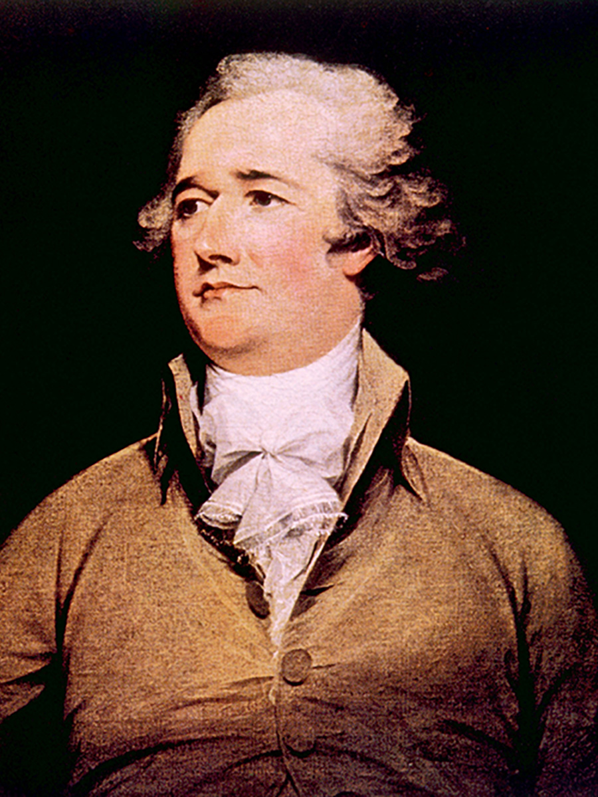
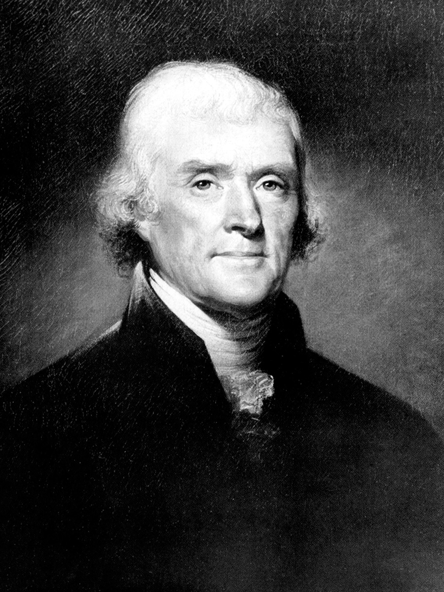

The nation’s first parties trace back to the debate over the ratification of the Constitution. Those who eventually would be known as Federalists favored a stronger national government and executive. The Federalists would also look to be more flexible in their interpretation of the constitution. Alexander Hamilton, the first secretary of the treasury under President Washington, came to be a leader of the Federalists.
Opposing a strong national government and favoring a government led by the legislative branch were the Democratic-Republicans (also known early on as the Anti-Federalists). This group was led by Thomas Jefferson, writer of the Declaration of Independence and secretary of state under President Washington. The Democratic-Republicans favored a strict interpretation of the Constitution. They believed government should have only the powers specifically mentioned in the Constitution. This belief would become a bit ironic once Jefferson became president and decided to engage in the Louisiana Purchase.
|
 |
 |
These two early parties pioneered political tactics to win elections and ushered in an era of political newspapers that took sides in political arguments. The Federalist party had early success in gaining elected offices. Yet by 1800, they found themselves out of power, with the Democratic-Republican party dominating American government.